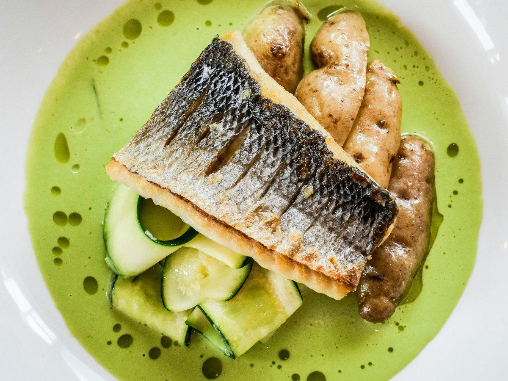
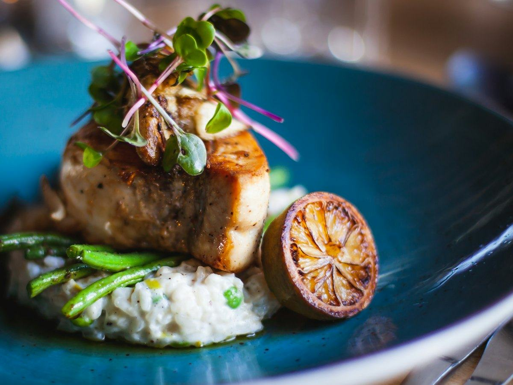
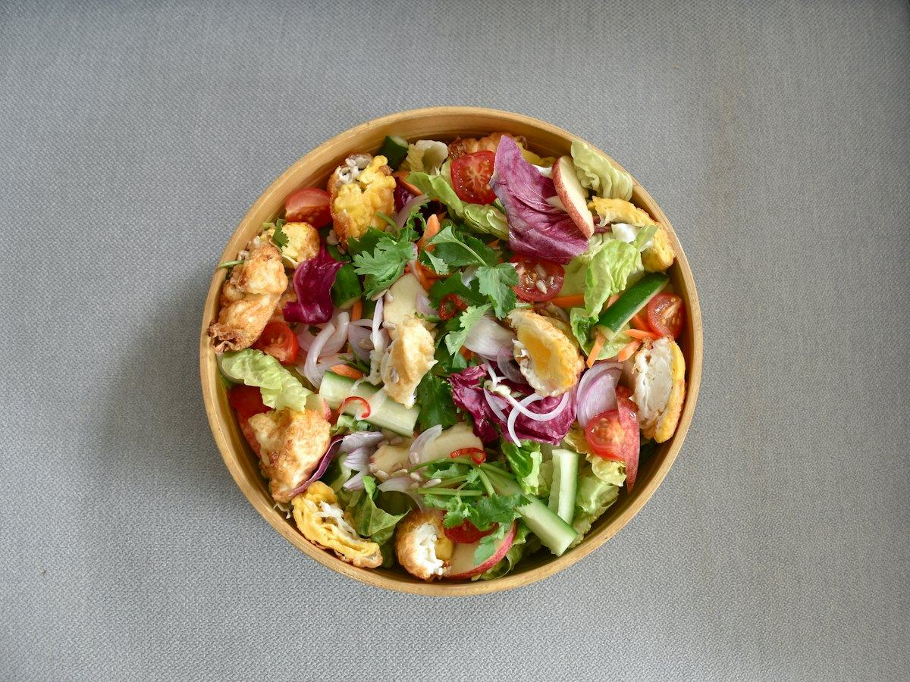

Recetas
3 recetas de salmón fáciles y saludables: al horno, en papillote y en ensalada
Salmón al horno con espárragos, en papillote con verduras y en ensalada con aguacate. Recetas fáciles con calorías, proteínas, hidratos y grasas por ración.
 Por el equipo editorial de Pombo AI
Por el equipo editorial de Pombo AI
12 nov 2026 · 8 min de lectura

El bacalao es uno de los pescados más queridos en España. Desalado es un pescado blanco magro, con mucha proteína y casi nada de grasa. Aquí tienes tres formas de prepararlo, con la información nutricional de cada plato.
Sobre la sal: el bacalao salado lleva mucha sal. Desálalo bien o cómpralo ya desalado, y no añadas sal hasta probar el plato. Para los cálculos usamos los valores del bacalao atlántico crudo del USDA como referencia del bacalao bien desalado; el sodio real dependerá del desalado.
Un clásico vasco que se hace con pocos ingredientes. La salsa se espesa con la gelatina del propio bacalao y un poco de harina.
| Proteínas | 31 g | 39 % |
|---|---|---|
| Hidratos de carbono | 28 g | 36 % |
| Grasas | 9 g | 25 % |
| Fibra | 4 g |
El % indica de dónde viene la energía del plato.
El bacalao es un pescado blanco muy magro: casi toda su energía viene de la proteína. Las patatas y los guisantes aportan hidratos y algo de fibra, así que es un plato completo para comer.

Todo en una bandeja: las verduras se asan primero y el bacalao se termina encima en pocos minutos para que quede jugoso.
| Proteínas | 31 g | 37 % |
|---|---|---|
| Hidratos de carbono | 35 g | 42 % |
| Grasas | 8 g | 21 % |
| Fibra | 5 g |
El % indica de dónde viene la energía del plato.
Las patatas y las verduras aportan los hidratos y la fibra, y el bacalao suma proteína con muy poca grasa. Una buena opción para una cena de horno sin complicaciones.

Una ensalada fresca de verano que junta legumbre y pescado. Si usas garbanzos de bote, está lista en un cuarto de hora.
| Proteínas | 23 g | 27 % |
|---|---|---|
| Hidratos de carbono | 35 g | 40 % |
| Grasas | 13 g | 33 % |
| Fibra | 10 g |
El % indica de dónde viene la energía del plato.
Garbanzos y bacalao se reparten el trabajo: la legumbre aporta hidratos y fibra, y el pescado, proteína magra. Es una comida que sacia mucho para las calorías que tiene.
Cómo calculamos los valores: sumamos los ingredientes con la base pública del USDA (FoodData Central, SR Legacy) y dividimos entre las raciones. Son aproximaciones: cambian según la marca, el tamaño y la cocción. Los sellos "fuente de" y "alta en" siguen los criterios del Reglamento (CE) 1924/2006. Para saber lo que comes de verdad, haz una foto a tu plato con Pombo AI.
¿Quieres saber más sobre por qué conviene comer pescado varias veces por semana? Lee los beneficios del pescado y cuánto comer a la semana.
¿Cuánto comes de verdad?
Con Pombo AI haces una foto a tu plato y la inteligencia artificial estima calorías, proteínas, hidratos y grasas en segundos. Es una estimación orientativa, no un dato médico.
Depende del grosor: las migas necesitan menos tiempo y los lomos gruesos más. Sigue las indicaciones del envase y cambia el agua varias veces, siempre en la nevera. Si lo compras ya desalado, te ahorras este paso.
El bacalao es un pescado blanco muy magro. Según la base del USDA, 100 g de bacalao atlántico crudo aportan unas 82 kcal y casi 18 g de proteína. Lo que más cambia las calorías del plato es el aceite y la guarnición.
Aviso: Este artículo es informativo y no sustituye el consejo de un médico o dietista-nutricionista. Si tienes una enfermedad, tomas medicación, estás embarazada o has tenido un trastorno de la conducta alimentaria, consulta con un profesional antes de cambiar tu alimentación.
Salmón al horno con espárragos, en papillote con verduras y en ensalada con aguacate. Recetas fáciles con calorías, proteínas, hidratos y grasas por ración.
Merluza a la gallega, al horno con pimientos y a la plancha con verduras. Tres recetas de pescado blanco con su información nutricional.
Ensalada de pasta integral con atún, tostada de atún y aguacate y tomates rellenos. Recetas fáciles con su información nutricional.